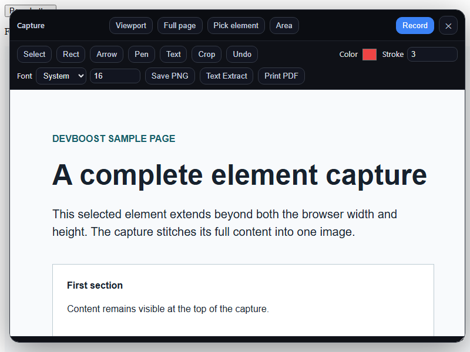
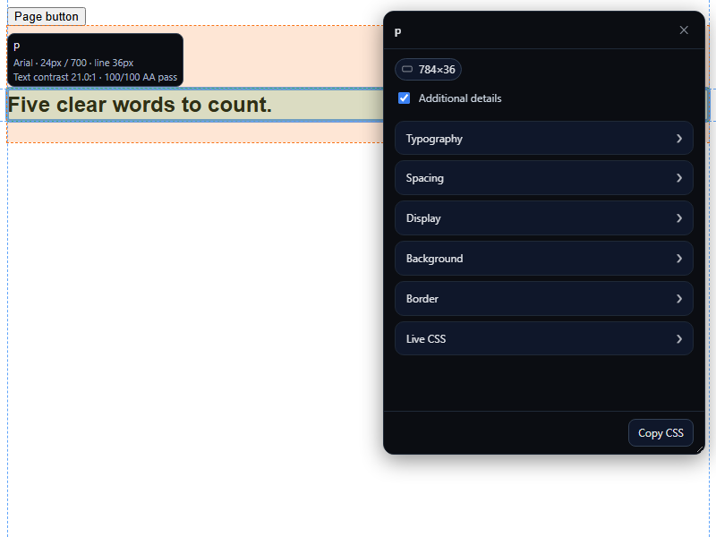
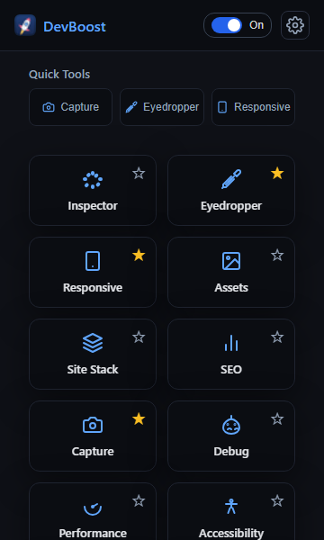
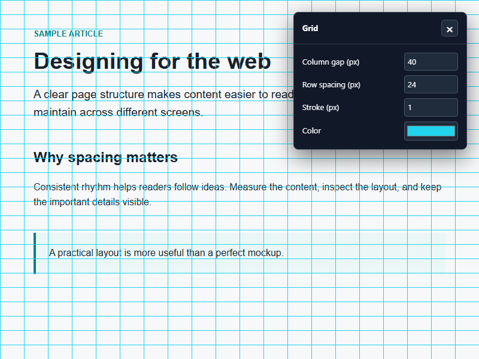
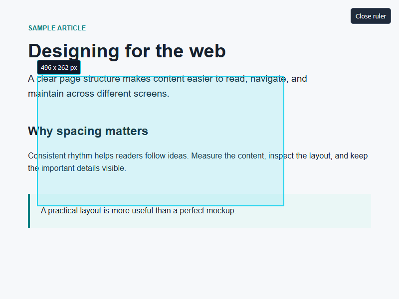
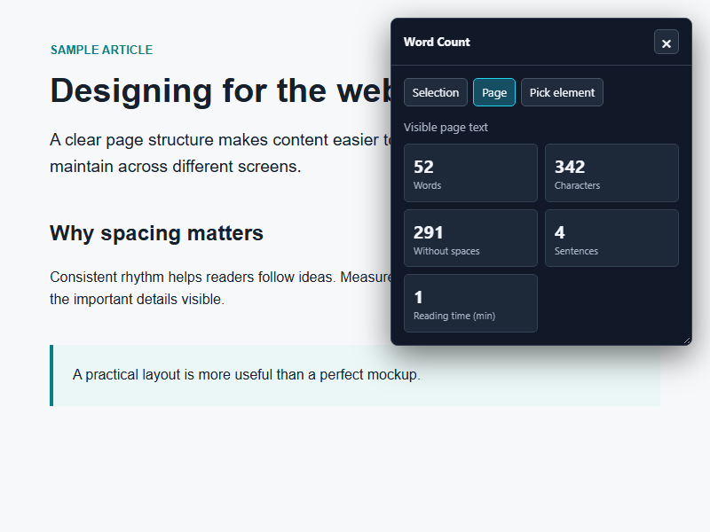

DevBoost changes
Latest updates
A closer look at what changed in the browser tools.
Capture beyond the viewport
The capture panel gets out of the way while you pick an element or draw an area. Element captures now stitch tall and wide targets into one image, and the result can go straight to Text Extract.

More context while inspecting
Switch on Additional details to see computed font family, size, weight, line height and a text-contrast AA indicator beside the highlighted element. The responsive viewer also restores your last open screen sizes next time.

Quick Tools you choose
Star any feature to put it in Quick Tools while keeping it in the main grid. Capture, Eyedropper and Responsive are the starting favourites. Cache, cookies and storage now have separate site-data actions.
Site Stack shows an asset version beside a WordPress plugin when its public asset URL exposes one. Eyedropper colour groups start collapsed.

Grid for layout checks
Place a grid over the live page and adjust its column gap, row spacing, stroke, and color. The settings are remembered for the next use, and the page remains interactive underneath.

Measure with Ruler
Drag across a region of the page to see its width and height in pixels. Close the ruler when you are done measuring.

Word Count by scope
Count selected text, all visible page text, or one picked element. See words, characters, sentences, and estimated reading time in the floating panel.
